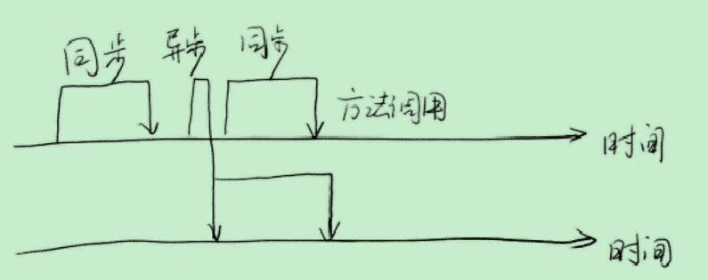
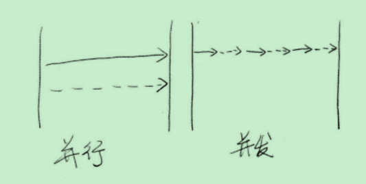
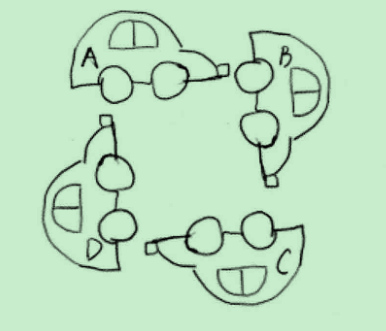

并发编程-1-并发中的基本概念
进程间的通信
在多进程程序中，如果多个进程之间需要协作完成任务，那么进程间通信的方式就是需要重点考虑的事项之一。这种通信常被叫做IPC(Inter-Process Communication)。不同版本操作系统所支持的IPC方法都不尽相同，而且针对IPC制定的标准也不止一个。因此为了简单统一，我们以Linux系统的IPC方法为例。
Linux可以使用的IPC方法有多种。从处理机制的角度看，它们可以分为三类：
- 基于通信的IPC方法
- 基于信号的IPC方法
- 基于同步的IPC方法
进程
进程的定义
进程是Unix及其衍生操作系统(包括Linux)的根本，因为所有代码都是在进程中执行的。通常我们把一个程序的执行称为一个进程。反过来讲，进程用于描述程序的执行过程。因此，程序和进程是一对概念，它们分别描述了一个程序的静态形式和动态特征。除此之外，进程还是操作系统进行资源分配的一个基本单位。
进程的衍生
同步和异步
同步和异步通常用来形容一次方法调用。
同步方法调用一旦开始，调用者必须等到方法调用返回后，才能继续后续的行为。
异步方法调用更像一个消息传递，一旦开始，方法调用就会立即返回，调用者就可以继续后续的操作。
异步方法通常会在另外一个线程中“真实”地执行。整个过程不会阻碍调用者的工作。

并发和并行

如果系统内只有一个CPU，而使用多进程或者多线程任务，那么真实环境中这些任务不可能是真实并行的，毕竟一个CPU一次只能执行一条指令，这种情况下多进程或者多线程是并发的，而不是并行的。真实的并行也只可能出现在拥有多个CPU的系统中。
临界区
临界区是用来表示一种公共资源或者说是共享数据，可以被多个线程使用。但是每一次，只能由一个线程使用它，一旦临界区资源被占用，其他线程要想使用整个资源，就必须等待。
阻塞和非阻塞
阻塞和非阻塞通常用来形容多线程间的相互影响
死锁、饥饿、活锁
死锁、饥饿和活锁都属于多线程的活跃性问题，当出现上面这几种情况时，相关的线程就不再活跃，也就是说它可能很难再继续往下执行。
死锁是最糟糕的一种情况，死锁的模型如下

A、B、C、D四辆小车在这种情况下无法继续行驶。它们彼此之间相互占用了其他车辆的车道，如果大家都不愿意释放自己的车道，那么这个状态永远维持下去，谁也不可能通过。死锁不能在代码层次解决，只能通过代码设计去改善。
饥饿是指某一个或者多个线程因为种种原因无法获得所需要的资源，导致一致无法执行。与死锁的区别是饥饿有可能在未来一段时间内操作系统自己解决，而死锁却是操作系统无法解决的。
活锁的概念可以类比我们在马路人行道上让路，当我们在马路人行道上行走，迎面有一辆自行车过来，我们都希望尽快地避开对方，避免撞上，于是都向左转，结果要撞上了，意识到这个问题后，我们都调整策略，然后同时右转。不过介于人类的智能，我相信这个转向的动作重复几次之后，我们就可以顺利避开对方。
然而两个线程并没有我们人类这个聪明。它们可能会一直这么僵持下去。
其实线程的死锁、饥饿、活锁这几种模型就是对我们现实生活的一种抽象。
并发级别
由于临界区的存在，多线程之间的并发必须受到控制。根据控制并发的策略，我们可以把并发的级别进行分类，大致可以分为阻塞、无饥饿、无障碍、无锁、无等待几种。
阻塞
一个线程是阻塞的，那么在其他线程释放资源之前，当前线程无法继续执行。当我们使用synchronized关键字，或者重入锁时，我们得到的就是阻塞线程。
无饥饿
如果线程之间是有优先级的，那么线程调度的时候总是倾向于满足高优先级的线程。也就是说，对于同一资源的分配，是不公平的！这会导致优先级低的线程产生饥饿。但是如果锁是公平的，满足先来后到，那么饥饿就不会产生。
无障碍
无障碍是一种最弱的非阻塞调度。两个线程如果无障碍的执行，那么他们不会因为临界区的问题导致一方被挂起。无障碍的多线程程序并不一定能够顺畅的运行。因为当临界区中存在严重的冲突时，所有的线程可能都会不断地回滚自己的操作，而没有一个线程可以走出临界区。
一种可行的无障碍实现可以依赖一个“一致性标记”来实现。线程在操作之前，先读取并保存这个标识，在操作完成后，再次读取，检查这个标识是否被更改过，如果两者是一致的则说明资源访问没有冲突。可以类比ArrayList里的modCount字段。
无锁
无锁的并行都是无障碍的。在无锁的情况下，所有的线程都能尝试对临界区进行访问，但不同的是，无锁的并发保证必然有一个线程能够在有限步内完成操作离开临界区。
无等待
无锁只要求有一个线程可以在有限步内完成操作，而无等待则是在无锁的基础上更进一步进行拓展。它要求所有的线程都必须在有限步内完成，这样就不会引起饥饿问题。